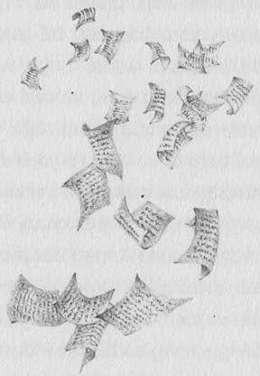
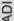
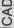
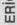
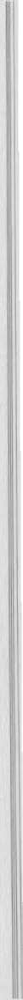
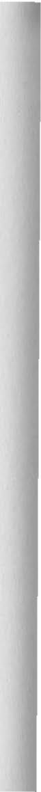
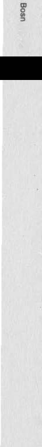
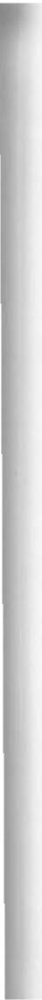

°'
aı·
� derdi. Serumu başcadı Büyük Cahile hazırlıyor. Ço-i cukların okuma isteğini nasıl yok edeceğini ancak o
.,,
ç: bilir. Dünkü çorbanın da böyle bir etkisi olmuştu."
o
)>
2
"Neyse ki biz hiç içmedik," dedi D6ri. "Ama Laci çorba içer. Peki, zehir neden onun üzerinde etkili olmuyor?"
"Çok basit!" diye çığlık attı Sari. "O yemek yerken sürekli kitap okuyor. Taşınabilir kitabını çıkarıyor ve serumun etkisini hemen yok ediyor."
"Ne şans!" diye iç geçirdi oğlan. "Dün her zamankinden farklı olarak yemek yerken kitap okumadığım da doğru. Uyarmış olmanız çok büyük bir şans. Sonsuz teşekkürler! Çok çok sağ olun!"
"Buna şimdi zamanımız yok!" diye uyardı herkesi Aranka Teyze. "Çocukların pastaları yemesini engellememiz lazım, yoksa ayvayı yerim. 11
O sırada insanın beynini sarsacak bir çığlık titretti okulu.
"Neredesiniz küçüklerim?" diye bağırıyordu Bella.
"Doksan dokuzu da kaybolmuş gitmiş!" diye çığlık attı Ella.
"Sanırım farelerin kaçtığını şimdi fark ettiler,"
dedi D6ri.
"Sadece bir çözüm var! Hırsızlık ayıptır ama şimdi faydalı olabilir!" dedi Aranka Teyze. "Acele edin ve pastaları oradan araklayın! Ama bir tekini bile orada bırakmayın!"
136

� a: w
Koridorda çaresizce koşturup duran Cici Teyze- �
....
,..
ler'in yanından hiç sezdirmeden, ıslık çala çala geçip ı;;
.&
gittiler. Yemekhaneye ulaştıklarında kızlar aceleyle .�
�
buzdolabına koştu, Laci ise kapıda gözcülük yaptı.
5
"Dikkatli olun! Geliyorlar!" diye uyardı oğlan.
"Çabuk gel!" diye seslendiler ve birer tepsi aldılar.
"Ama nereye?"
"Yemek kazanlarını getirdikleri şu arka kapıdan!"
Dizleri titreyerek aceleyle dışarı yöneldiler. Tam arkalarından kapıyı kapatmışlardı ki yemekhanede mutfakçıların ayak seslerini işittiler.
"Gezinti nereye?" diyerek önlerine fırladı tehditkar bakışlarla ıgnac. "Bu kadar pastayı kime götürüyorsunuz?"
"Cebir'e!" diye cevap verdi Laci, sanki bundan daha doğal bir şey yokmuş gibi.
"Okul bekçisinin köpeğine mi? Delirtmeyin adamı! Doğum günü mü var yoksa?"
"Az önce yemek şirketinden aradılar ve pastaların bozulmuş olabileceğini, çocuklara verilmemesi gerektiğini söylediler," diye açıkladı D6ri sanki kitaptan okuyormuş gibi.
"Olsun yine de bana birkaç tane verebilirsiniz.
Kimseye söylemem."
"Mümkün değil. Tehlikeli, anlamıyor musun?"
137


<
�
Qo;·
g
"Peki, köpeğin sağlığı önemli değil mi? Cebir'in
::J
� midesine dokunmayan benimkine de zarar vermez.
"O
gı Tepsinin birini verin banal"
�·
Laci, bmuz silkti ve elindeki tepsiyi uzattı.
"Sen bilirsin,"· diye ekledi biraz küçümser gibi.
Ignac hemen çitlerin dibine oturdu ve tıkınmaya başladı. Diğer üç çocuk ise yüklerinin kalanını Cebir' in kulübesinin önüne yığdılar.
"Zaten okumayı bilmiyor," dedi D6ri.
"Ne ıgrıac ne de Cebir," diye kıkırdadı Laci.
"Ama bundan sonra da hiç öğrenemeyecekler,"
diye ekledi Sari, bu arada hayvanın kulaklarım kaşıyordu.
Olay yerinden uzaklaşırlarken Laci'nin aklına bir şey geldi:
"Bu tek bir· köpek için çok değil mi?"
Endişeyle ar�alarına baktılar, fakat sonra rahatlayarak yolarına devam ettiler. Çünkü köpek ganimeti cömertçe doksan dokuz fareyle paylaşıyordu.
138


On D·ördüncü ·Bölüm
Bu bölümde herkes layık olduğu ödülü alıyor, tabii cezayı da. (Her düzgün hikayede olduğu gibi.) Tahmin edebilirsin, hayır, tahmin bile edemezsin Cici Teyzeler'in tüm zehirli topların yer yarılıp içine girdiğini fark ettikleri anki üzüntüsünü. Toplar yerin içine değil, Cebir'in ağzının içine girmişti ama onlar bunu bilemezdi tabii. J anos 1 3 Kiss, o gün köpeğinin doksan dokuz farenin eşliğinde sonbahar güneşi al-139
s
s:
�·
ğ tında şekerleme yaptığına yemin bile edebilirdi. Ama
:J
'<
� nihayetinde en iyisinin olay hakkında konuşmamak
"D
çı olduğuna karar vermişti çünkü aslına bakılırsa her
�·
2 zaman içkiyi biraz fazla kaçırırdı. "Artık tek bir yudum bile içmeyeceğim!" diye karar verdi hemen.
Daha doğrusu içerim ama sadece su.
Büyük Cahile, yani başcadı, laf aramızda küçücüktü, tam da bir cüce kadar boyu vardı; kırmızı, vücuda yapışık deri pantolonu ve deri ceketiyle, karmakarışık siyah saçlarıyla daha öğle yemeğinden önce mutfakta belirdi ve Cici Teyzeler'i tek kelime etmeden, gülümseyerek atık yemek teknesine batırdı, sonra da tekneyi tuttuğu gibi Dumanovszky Kardeşlerle beraber toz dumana karıştı. Başarısızlığa uğramış bu iki cadıya daha sonra ne olduğu.nu bilmiyorum ama muhtemelen sonraki ı 00 yılı ceza olarak kitap okuyarak geçirmişlerdir, tabii bunun için önce okumayı öğrenmeleri gerekir. Cahil olmamak bir cadı için büyük bir utançtır!
ilaç ıgnac üzerinde tam da beklenen etkiyi göstermişti. Sadece kitap okumaktan soğumadı, aynı zamanda alfabeyi bile unuttu. Marika Öğretmen onu eğer kendine çekidüzen vermezse ibret olsun diye birinci sınıfa geri yollamakla tehdit etti. Kalın kafalı sahte kahraman bundan öyle korktu ki ta yılsonuna kadar ders çalıştı. İşi zordu. Neyse ki mayısın sonuna doğru serumun etkisi geçmeye başladı ve Ignac niha-140



yet boşuna bu kadar çalışmadığını anladı. Cezalar- �
dan, uyarılardan ve atılmaktan da böyle kurtulmuştu. i Yaramazlık yapmaya vakti bile yoktu.
CD
..
�
Okulun tüm öğrencileri kendilerini okumaya ver- > mişti ve nihayetinde kendilerinden önce Laci'nin bile okumadığı kitapları bile ödünç almaya başladılar.
Her ayın 1 3'ünde birinci ve üçüncü teneffüste kütüphanenin önündeki uzun kuyruklar yılan gibi kıvrılıyordu. Tabii hile yapanlar da çıkıyordu. Kim mi yakalıyordu? Tabii ki kütüphanecinin sihirli kartları. Aranka Teyze, Lacilere bir gün sahte kartlara ne olduğunu göstermişti. O günkü beyaz kağıtları havaya attı. Ger
çek olanlar gökkuşağının tüm renkleriyle parıldayarak evrak dolabının içine uçuyordu; fakat yalan dolu olan- ·
lar önce grileşiyor, sonra kararıyor ve nihayet sonbahar yaprakları gibi çöp kutusuna düşüyordu. Neyse ki sadece birkaç tane böyle sahte kart vardı.
Kütüphaneci peri artık 99 yıl önceki gibi tamamen gençti; oldukça güzel olduğunu da söylemeliyim. Bazen, kimse görmediği zamanlar hayallere dalmış şekilde hoplaya zıplaya merdivenlerden Zrumeczky heykelinin yanına iniyordu.
" Niye indiğini mi soruyorsun? Ne bileyim ben. Az önce kimseler görmediğinde indiğini söylemiştim.
Ben de görmedim."
" Laci'ciğim, sanırım senlibenli konuşabilirsin,"
dedi Aranka aniden, güzel bir Mayıs günü.
141
:5
g
�·
g
Oğlan biraz duygulanmıştı; ardından eskiden beri
�
,.. kafasını kurcalayan bir soruyu sormanın tam vakti
"
çı
olduğunu düşündü.
�-
Q
"Söylesene hiç de öyle mort olmuş biri gibi gö-rünmüyorsun, aksine sevimli ve neşeliyken sana neden Aranka Mort ismini vermişler?"
"Aranka Mort mu? Bana kimse Mort adını vermedi ki!"
"Darılma ama bütün okul sana öyle diyor. İsmin bu değil mi?"
"Libra'nın uyarı mektubunda nasıl hitap ettiğini hatırlamıyor musun?" diye sordu peri ve son moda mavi sırt çantasından selofan mektubu çıkardı. Üzerine üfledi ve Kütüphane Baş Perisinin yazısı hemen ortaya çıktı:
"Sevgili Aranka! görüyor musun?"
"Öyleyse soy ismin Mort değil Sevgili? Darılma ama son zamanlarda daha ziyade aksi bir moruktun!"
"Bu doğru ama senin soyadın J6hegyi de Güzeldağlı anlamına geliyor; sana da dağdan ovaya indi
ğinde Güzelovalı demiyorlar değil mi?" diye güldü çınlayan sesiyle peri.
Okulun 100. doğum günü böyle iyi bir atmosfer içerisinde gelip çatmıştı. Törende spor, şarkı, resim ve matematik yarışmasını kazanan birçok öğrenci onur belgesi ve kitap ödülü aldı. Her sınıfın gurur 142

ö
�
·a:
w
duyacağı birisi vardı. En çok da okuma yarışmasının �
sonucunu merak ediyorlardı çünkü herkes katılmıştı. J
Ödülü Aranka verdi.
..
.g
Öğretmenler kurulunun değişikliği neden fark �
etmediğini bilmek ister misin? Problemi küçük bir palavra çözdü. (Ama yine de bunu benden öğrendiğini yayma kimseye!) Aranka, müdire hanıma mektup yazmıştı ve mektupta emekliye ayrılacağını bildiriyor ve yerine kuzini Aranka Sevgili'yi tavsiye ediyordu.
Müdire hanım, Aranka, yerine başkasını ar?mak zorunda kalmadığı için mutlu olmuştu çünkü okul kütüphanecilerinin nerede yetiştiğini bile bilmiyordu.
(Oysa Sen artık biliyorsun!)
Dolayısıyla Aranka Sevgili, mikrofon önüne çıktı
ğında hiç kimse şaşırmamıştı. Okul bekçisi çok önceden koca bir yığın renkli kağıdı hazırlamıştı. Bunun nasıl bir kağıt tepesi olduğunu bilen tek kişi Laci'ydi çünkü diğerleri sadece beyaz kağıtlar görüyorlardı.
"Sevgili çocuklar!" diye başladı konuşmasına çınlayan bir sesle kütüphaneci peri. "Okuma yarışmasına katıldığınız için hepinize teşekkür ederim! Bunun benim için ne çok şey ifade ettiğini tahmin bile edemezsiniz. Umarım bundan sonra da okuma alışkanlı
ğınızı bırakmazsınız. Şimdi izin verirseniz büyükannem Aranka Mort burada birazcık kızarmıştı- ve kendi adıma ilk ödülü veriyorum; ödülü kazanan Laszl6 J6hegyi 4/D sınıfı öğrencisidir ve bu öğretim 143


�
?r
Q'
.. yılında 501 kitap okumuştur. Lütfen kürsüye gel i Laci!"
-o
çı
Okulun 332 öğrencisi artık yılın başındaki gibi
�· ufak ve solgun olmayan Laci, Aranka'ya doğru yürürken alkıştan ortalığı yıkıyordu. O sırada bir esinti renkli kağıt yığınına saldırarak binlerce harika kağıdı havaya kaldırdı ve kağıtlar kelebek gibi avlunun etrafında dönmeye başladılar, birinci katın merdiven sahanlığı penceresinden içeri girdiler, Zrumeczky'nin bronz kafasını okşayıp geçtiler, sonra yeniden pencereden dışarı fırladılar binanın çatısına doğru. Orada bir tur daha döndüler, sonra giderek daha yükseklere tırmandılar ve ortadan kayboldular. Çocuklar şaşkınlıktan alkışı bile unutmuşlardı. Fizik öğretmenleri ise uzun süre böyle güneşli ve rüzgarsız bir günde okulun avlusunda nasıl kasırga çıktığını tartıştılar.
Laci, ödülünü alırken bütün okul coşkuyla alkışlamaya başladı.
"Sonra aç!" diye fısıldadı Aranka oğlana.
"Çok teşekkür ederim!" diyerek gülümsedi Laci mahcup şekilde.
"Laci'ciğim lütfen," dedi müdire hanım, "kısa bir konuşma yap! Kazananlar her zaman böyle yaparlar."
Oğlan tereddüt içerisinde mikrofona geldi. Böyle bir kalabalık önünde canı doğaçlama konuşma yapmayı istemiyordu, başka bir yerde de istemiyordu.
144

ö
�
iC
w
Heyecandan tamamen benzi atmıştı. Külot Klott ye- �
...
rinden fırlayarak mikrofonu uygun bir yüksekliğe �
.g
ayarladı. Aranka cesaret verircesine gülümsüyordu.
!'!
�
"Özür dilerim ama ben konuşma yapamam fakat > onun yerine okulumuz şerefine yazdığım bir şiiri okuyacağım."
BEKES SOKAÔT
Okuldan güzel bir gQn
Yaşlı gözlerle aynlacağım.
Ne güzel olurdu
Sonsuza kadar
(Sınıfta kalarak değil, yan/iş anlama) Buraya gelebilseydim
Öğleden sonra hep burada dinlenir, Anaokulunda ezberler,
Olur, kaplumbağa, balık, yılanbalığı, Çay, tost ekmeği, ikindi kahvaltisı.
Küçük bahçede, avluda
Gelsin rüzgar, kar ve yağmur,
o zaman bile severim Bekes'i,
Sağ ol, Dezsö Zrumeczky!
Laci'nin izleyenler önünde eğilmesini Gusztav Augusztin'in mikrofona çıkarak şu törensel haberi vermesine kadar coşkulu bir alkış fırtınası takip etti: 145
<
�
:ı
.,
�
"Sevgili afacanlar, sevgili öğretmenler! Pastane-
%
"' min en önemli misafirleri Bekes Sokağı sakinleri ol-
...,
�· duğu için bugün herkesi misafir etmeye karar verdim.
>
Q Sizleri törenden sonra Ağustos Pastanesi'ne gelerek birer dilim pasta yemeye davet ediyorum!"
Koro programın son şarkısı olan "Ah gelip çattı o güzel saat" isimli parçayı bitirir bitirmez dışarıya hücum ettiler. Hiç kimse birinci katın merdiven aralığına yönelmemişti, dolayısıyla ancak ertesi günün sabahı Zrumeczky heykelinin ortadan kaybolduğu okul bekçisinin gözüne çarptı. Sevgili Aranka ise o gün öğleden sonradan itibaren her gün Margit Adası'nda filinta gibi bir adamla kol kola gezintiye çıkar olmuştu, adam belirgin şekilde yaşlı mimara benziyordu.
"Söylesene Dezs6," diye sordu bir gün Aranka,
"duman zehirlenmesi sözüyle ne demek istemiştin?
Çünkü hiç duman görülmedi ortalıkta."
"Duman zehirlenmesi demedim, Dumanovszky zehirlenmesi dedim. o iki Cici Teyzenin soy isimleri Dumanovszky. Neyse ki sen onları yendin, mele
ğim!"
"Dur bakalım! Biliyorsun ki melek değilim, sadece periyim," diye güldü Aranka; balıklı gölün etrafında gezinmeye devam ettiler ve Zrumeczky Bey'in okulun ı 00 yıl önceki açılışında neden bu alımlı kütüphaneci kadına kur yapmaya cesaret etmediğine kafa yordular.
146
�
(.)
·a:
w
Laci ne mi aldı? Aldığı, kitaptan başka bir şey de- Q. �
ğildi. Büyük bir şey olmadığını mı söylüyorsun? Bü- �
aı
yük olmasına büyük değil (24'e 1 2 buçuk santimetre) "'
:g
�
ama özel bir şey. Bu deri ciltli, tokalı kitabı bizzat > Libra hazırlamıştı, üstelik içerisindeki hikayeler asla tükenmeyecek şekilde. Laci bir romanın sonuna gelir gelmez, hemen içerisindeki hikaye değişiveriyordu.
Ne şans değil mi?
Dördüncü sınıftan sonraki yaz tam olarak bir önceki gibi geçmemişti. Laci, "ikizlerle ve Sandor'la, ıgnac'la ve Agica'yla havuza gitti, top ve masa tenisi oynadıkları arsaya indi ama yorulduklarında içlerinden biri bir kitap çıkarıyor ve diğerlerine okuyordu.
üstelik ıgnac bile.
Öğretim yılı açılış gününde Laci'nin·. artık canı sıkılmıyordu, Bekes Sokağı ilkokulu'na ıslık çala çala gitti; okulun kütüphanesinde 59 adet eski ve 59 adet yeni Pal Sokağı Çocukları öğrencileri bekliyordu; çünkü okunması mecburi olan kitap yine Ferenc Molnar'ın orijinal eseriydi. Elbette artık Laci'nin bunları okuması gerekmiyor.
147
Son söz
Burada yazar yani ben, son kez sesleniyorum Sana, yani_ Okura.
Sonuna kadar dayandığın ve kitabı baştan sona okuduğun için teşekkür ederim. Artık Senin gerçek bir OKUR olduğun sahiden kesin, ister çocuk ol, ister büyükanne.
Sanırım benimle ilgili bir şikayetin de yoktu çünkü ben de zaten yazmayı altmış ikinci sayfada bir yerlerde yarıda bırakmadım.
Bütün bunlardan sonra olur da bu kitabı veya bir başkasını yeterince eğlenceli ve heyecanlı bulmazsan Gutenberg ailesiyle hiçbir akrabalık bağın yoksa da yapman gerekenin ne olduğunu kesinlikle biliyorsun.
Hayal gücünü istediğin gibi kullan!
Ayrıca lütfen en yakın zamanda eğer okulun kü-148
.S ffi
tüphaneci kadınıyla karşılaşırsan ona iyi bak! Son �
zamanlarda saçları birazcık beyazlaşmış mı? Keyfi j yerinde değil mi? Gözlerinin etrafı morarmış mı? Bel- �
,;;:
ki de birkaç kitap ödünç alman gerekiyordur.
>
149